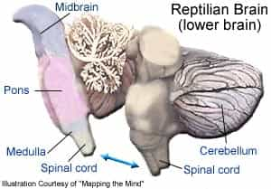

Anton Hagen is a multilingual writer from the UK whose joys and woes living in different parts of Europe inspired him to contribute philosophical pieces to the manosphere, with the odd caustic joke.


Democracy is widely accepted as being the fairest political system. Anyone who dares question its legitimacy is usually cast out as a fascist or a moron. Despite this fact, few people seem to understand how their beloved structure actually works. Democracy literally means power to the people, but as they hold the power, they also bear great responsibility, as the old maxim goes.
This responsibility comes in the form of coming to a collective understanding of the world’s problems and working as a cohesive unit to solve them. For this system to function, however, the majority must work rationally to be able to tackle them. Quintus Curtius touched on this point from a historical perspective in his essay yesterday, and now we will look at its modern applications.
Recently, various articles have been written about certain topics, all of which have an underlying aspect in common: collective irrationality. In each case, there has been a fundamental rational error committed and its effects have multiplied exponentially as more people have got involved. Therefore, if the majority of humans are incapable of operating rationally, how can a system which relies on them having a fundamental basis of understanding the world function properly?
Take for example the UVA Rape scandal: the specific details of the case were not clarified properly before a verdict was made. Widespread outrage accompanied with mass-confusion could have and should have been avoided by literally a few seconds thought: did the evidence point to a rape, or not?
This is similar to the Zoë Quinn affair(s) in which the overwhelming and unambiguous evidence pointed to Quinn being guilty of sleeping with men for her video game’s approval whilst in a relationship, yet thousands came out in their droves to defend her.

Unreasoned thinking is evident in global issues as well. For example, liberals continue to support Obama despite his sickeningly anti-liberal drone strikes and torture policies. People also continue to support the premise that CO2 emissions cause the ice caps to melt, even though the Antarctic ice sheets have expanded in volume since 2012. Blue-pillers continue to overlook very simple facts in their hundreds of millions.
The worrying fact about all of these errors is their simplicity. The logic behind these problems is in no way complicated or ambiguous, so much so that were the issues stripped down to their finest details; they could be resolved within seconds. It is far easier to work out whether the UVA Rape case was false or whether Obama is liberal than tackling questions on an elementary school reasoning paper.
It is wrong to suggest that people make errors because they are not intelligent enough. Even the simplest of human intellects is perfectly able to understand the cases described above. The errors arise not because the brain’s reasoning circuits are too weak; they arise because they get overridden by the brain’s emotional circuits.
In other words, blue-pill thinkers make elementary errors not because they lack the intelligence, but rather because they lack the ability to control their emotions.
Scientific breakthroughs in the last fifty years support this claim. Drew Westen, the director of clinical psychology at Emory University conducted a study which proves that the frontal cortex, responsible for rational thought, literally switches off when blue-pillers try to analyze information.
In his study, both Republican and Democratic party members were asked to evaluate information which threatened their preferred candidate while their brain activity was monitored. Westen discovered that:
“none of the circuits involved in conscious reasoning were particularly engaged. But there was a rise in serotonin levels after the information was ignored.”
The awful truth that this experiment reveals is not that the blue-pillers in this experiment were not thinking incorrectly, it is rather they were literally not thinking at all. Instead, it was the emotional part of the brain which was being triggered.
The subjects reacted to the information as someone would a shocking scene in a horror movie, or as primate would a snake. Furthermore, after they had ignored the information, they experienced a feel-good rush that one would normally expect to happen after riding a rollercoaster, not after analyzing facts and figures. Stefan Molyneux elaborates on this phenomenon in his video:
The ignoring of information and emotional reactions observed in the test subjects are the same processes which occur in blue-pillers across the globe. The UVA Rape protestors’ emotionally react to words such as “rape” and “violence,” triggering a wide range of irrational emotions and prejudices and coming to an incorrect conclusion after no thinking has taken place.
The Obama supporters are similarly responding to his skin colour and handsome face as opposed to looking at his statistics. Emotions override reason in each case.
This is proof that the human brain has developed very little since its reptilian past, despite our firm belief that we have made great evolutionary steps since our primitive roots.
Reasoned thinking has simply not been important to our survival: historically, we only needed to react quickly to fears and impulses to survive and reproduce; the cavemen who sat and pondered about their predators all died out. Humans cannot override hundreds and millions of years of evolutionary brain development.

The worst part about these conclusions is the fact that despite these results, we continue to believe that we are in fact philosophical and reasoned when we simply aren’t. We have constructed massively complex and interdependent systems which rely on our capability to be rational thinkers.
The population has grown so large and technology so advanced that a basic error in judgement can have extreme effects: simply look at the drunken oil futures selling incident or MF Global. How can we expect to avoid errors like these if we aren’t even capable of working with even the very simplest of facts and figures?
Let us return to the original issue of democracy. Can it really be functional if the people are physically incapable of thinking? In our current system, any transgression by the government is acceptable as long as the majority of people accept it, no matter how immoral it is.
Democracy legitimizes stupidity. As the UVA Rape case and the Quinn affair have shown, even so-called “smart” people will believe the most ludicrous of claims without evidence, just as long as it is presented in a way that appeals to their emotions.

Democracy would be a perfectly fair system if the world had no problems which require rational thinking to solve. However, this is simply not the case. Democracy is not adequate to tackle the problems of massive debts, declining birth rates, and peak oil because the majority of people are not capable of thinking rationally.
In today’s democratic system, the tiny minority of red pill thinkers have substantially less power than the mass of Obama supporters, global warming enthusiasts, and the idiots who support Sarkeesian, Sulkowicz, Quinn and co.
We must therefore ask ourselves the question: is the right to vote really worth anything if it is offset against an irrational majority?
Read More: Why The Ukraine Crisis Is A Red Pill Vs Blue Pill Superpower Clash